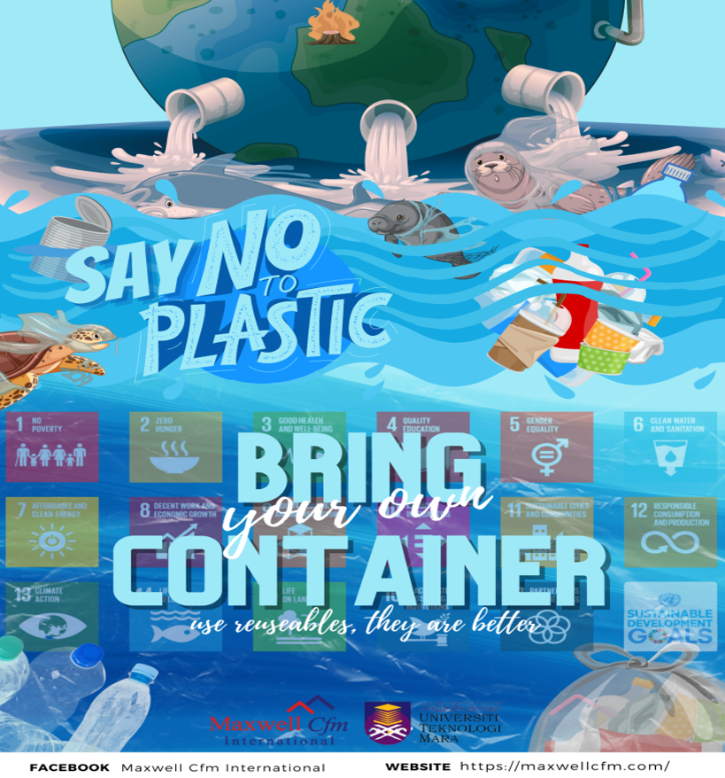
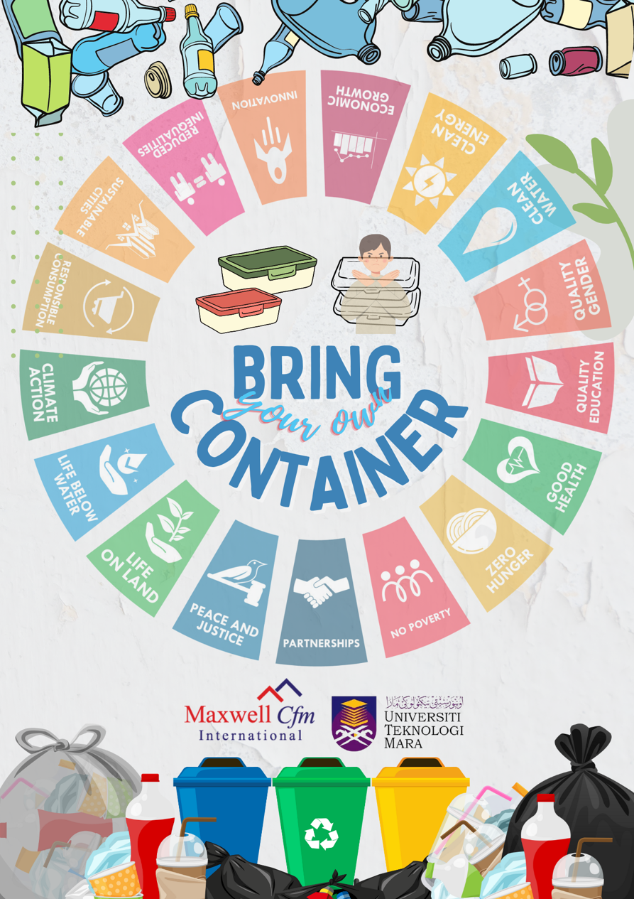

Sustainability · Project Proposal
Think Green, Go Green (T3G)

A sustainability campaign proposal designed and presented to UiTM's Green Centre, aiming to reduce single-use plastic takeaway packaging at a university cafeteria, developed during an internship with Maxwell Cfm International.
Overview
A campaign to cut plastic waste on campus
T3G is a sustainability campaign proposed by Maxwell Cfm International (MCfm) to UiTM's Green Centre (UGC), aimed at reducing single-use plastic containers, spoons, and bags at UiTM Samarahan's Jubli Café.
The proposal sits under UiTM's broader adoption of the United Nations Sustainable Development Goals (UNSDGs), delivered through the university's 3R (Reduce, Reuse, Recycle) initiative. I led the three-person team that designed the campaign structure and presented it to UGC on MCfm's behalf.
A note on scope
My involvement was limited to designing this proposal, presenting it to UGC on 25 May 2023, and responding to their feedback in that meeting. I wasn't involved in running the campaign afterward, and I don't have confirmation of whether UiTM proceeded with it beyond that point. The scope, objectives, and goals below reflect what was proposed; the timeline reflects what was pitched initially, before it was revised during the meeting itself (see below).
The Problem
Why T3G?
Takeaway packaging at campus cafeterias generates a steady stream of single-use plastic, most of which is never separated for recycling. UiTM's Green Centre already runs 3R initiatives across campus, but Jubli Café had no structured plastic-reduction effort of its own.
T3G was proposed to close that gap: a targeted, time-bound campaign at a single café, with defined goals and weekly audits, rather than a campus-wide policy change attempted all at once.
Scope, Objectives & Goals
What the campaign set out to do
The proposal was initially structured around a defined five-week rollout, with weekly audits intended to make progress measurable. During the presentation, UGC raised scheduling and contractual concerns, leading to a proposed extension to six months.
Scope
- Eliminate plastic containers, spoons, and bags at Jubli Café for takeaways.
- Promote zero food waste through sustainable consumption habits among students.
Objectives
- Promote the UN Sustainable Development Goals (UNSDGs).
- Create awareness among the UiTM community about 3R.
- Promote reusable containers among students, lecturers, and visitors.
- Educate the UiTM community on sustainable food consumption.
- Appoint T3G Champions at UiTM Samarahan for program continuity.
Goals
- Zero plastic or polystyrene containers used at Jubli Café within 1 month.
- All students bringing reusable containers for takeaway within 3 months.
- Reduce waste production at Jubli Café by more than 5% within 1 month.
- Adoption of the method by UiTM's Facility Management Department.
Project Team
A three-person team
A three-person team developed the proposal and prepared the presentation for UiTM's Green Centre.
Proposed Timeline
The five-week rollout presented to UGC
This was the schedule proposed to UGC as part of the pitch, structured around weekly waste audits so progress could be tracked as the campaign ran. Whether it was actually carried out after the proposal was presented isn't something I have visibility into.
25 May 2023
Kickoff meeting between MCfm and UGC.
6–8 June
Campaign preparation and first weekly audit.
12–15 June
Campaign launch and second weekly audit.
19–22 June
Third weekly audit.
26–29 June
Final audit and project evaluation.
How the timeline actually changed
This five-week schedule was the plan as originally pitched. In the same meeting, UGC raised two concerns: June fell during students' exam period, and the vendor contract at Jubli Café would need amending to run the campaign. In response, I proposed extending the campaign from a one-month to a six-month program, giving both organisations more time to prepare, which MCfm approved on the spot. UGC then requested a formal letter of intent for UiTM's Rectors to review. I don't have visibility into what happened after that letter was requested.
Project Requirements
What the campaign needed to run
Point of Communication
- Direct communication between the MCfm lead and UGC.
- Regular updates relayed on project progress.
Marketing Materials
- Stand-up banners, posters, and signage to promote the campaign at the café.
Weighing Scales
- Used to conduct the weekly waste audits.
- Tracked and analysed campaign progress over time.
Feedback
- Student feedback collected through Google Forms.
- Responses shared with both MCfm and UGC.
Campaign Materials
Promotional poster designs for Jubli Café
Two poster designs were prepared as supporting materials for the proposal, intended to promote the "bring your own container" message and tie the campaign visually to the UNSDGs.


Summary
A proposed approach to reducing plastic waste at Jubli Café
The pitch behind T3G positioned Jubli Café as a potential starting point for a broader approach that UiTM's Facility Management Department could eventually adopt.I presented the proposal to UGC on 25 May 2023 and revised the proposed timeline in response to their feedback. What happened after the request for a formal letter of intent is outside what I was involved in.
Reflection
What I Learned
Leading T3G was a different kind of project for me — less about building a system, more about coordinating people and organisations toward a shared goal.
Leading a small team across two organisations toward a shared set of deliverables.
Scoping a proposal narrowly enough that progress would be measurable within a fixed timeline, if adopted.
Handling real pushback from an external stakeholder in the room, and proposing a workable revision (extending the timeline) on the spot rather than treating the original plan as fixed.
More Projects
← Back to Projects